من چند وقت پیش چند تا از دکمه های کیبورد لپ تاپم خراب شده بود و کلید های مهمی هم بودند و عملا کد نویسیم رو مختل کرده بود. البته بلافاصله یه کیبورد گرفتم ولی همون لحظه این سوال برام پیش اومد که پر تکرار ترین کاراکتر های کیبورد برای زبان های برنامه نویسی مختلف چیه؟
در مرحله اول باید منبع خوبی از سورس کد پیدا میکردم که به دیتاست زیر رسیدم :
این دیتاست حجم عظیمی از کد های زبان های برنامه نویی مختلف رو داره :
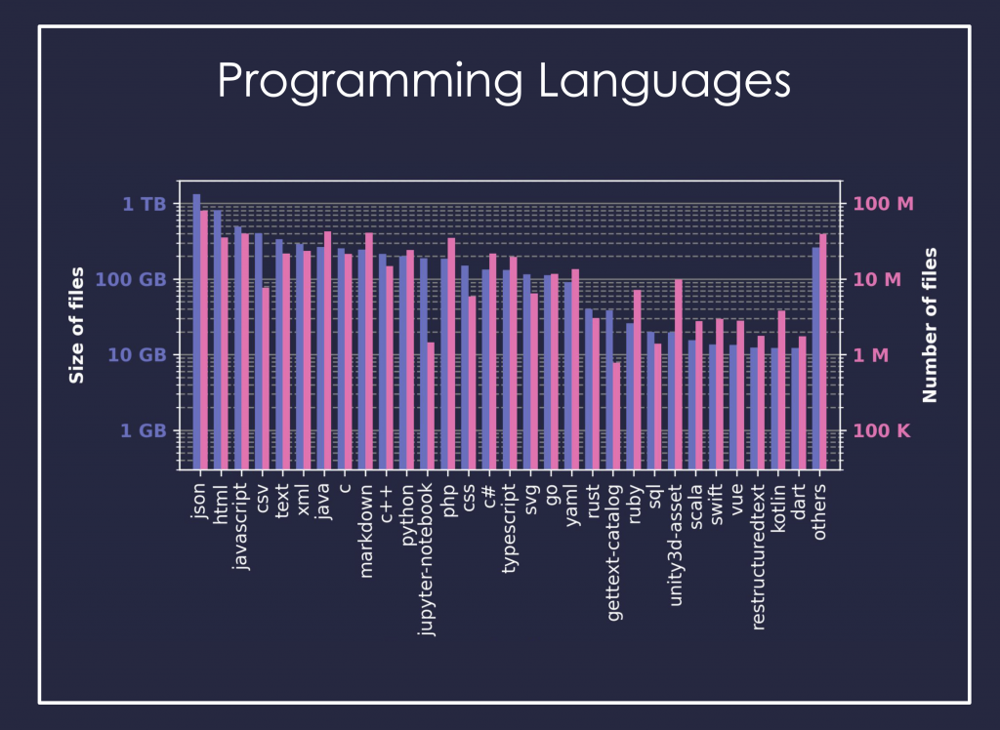
کاری که انجام دادم صرفا یه پردازش کاراکتر به کاراکتر ساده است
یه اسکریپت پایتون نوشتم که تعداد تکرار هر کاراکتر رو در کد ها بشمره. از هر زبان برنامه نویسی فقط 1 میلیون فایل رو انتخاب کردم و به نظرم تعدادش مناسبه و حتی زیاد هم هست!
این عکس رو برای زبان های مختلف به ترتیب مینویسم. توی این تصاویر tab و space با هم ادغام شده و دکمه shift هم برای تایپ کاراکتر های خاص و حروف بزرگ استفاده میشه. تصاویر زیر داره حروف پر تکرار رو نشون میده و دکمه هایی که سبز نیستند به این معنی نیست که استفاده نمیشدند.
پایتون
ترتیب کاراکتر های پر تکرار : etsarionl
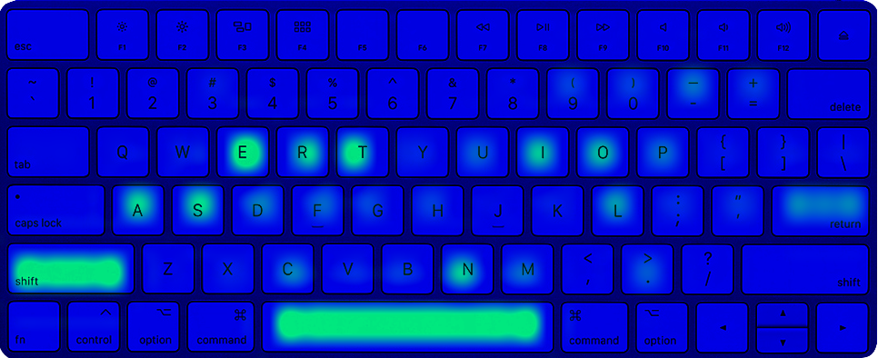
سی پلاس پلاس
ترتیب کاراکتر های پر تکرار : etirnaos
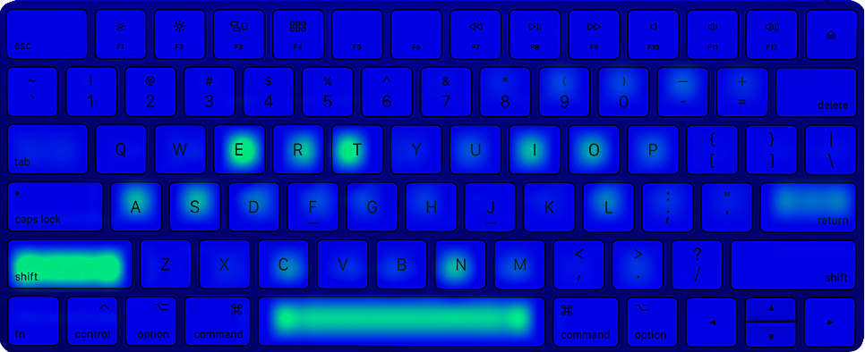
سی
ترتیب کاراکتر های پر تکرار : etinr_a
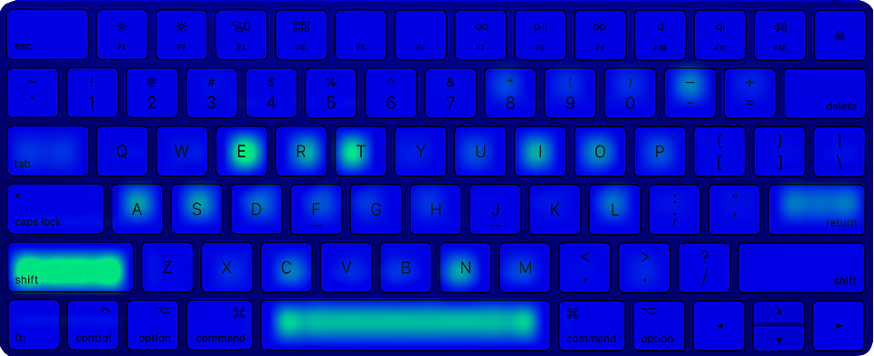
جاوا اسکریپت
ترتیب کاراکتر های پر تکرار : etnraiosl
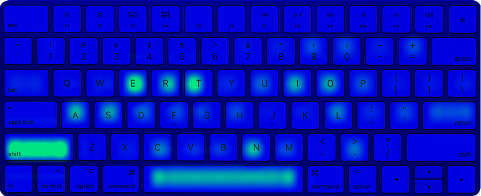
سی شارپ
ترتیب کاراکتر های پر تکرار : etrainos
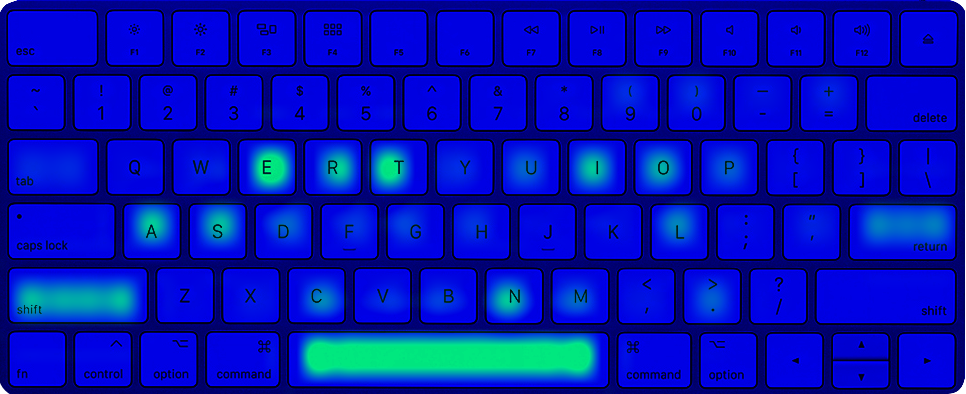
گولنگ
ترتیب کاراکتر های پر تکرار : etrnioas
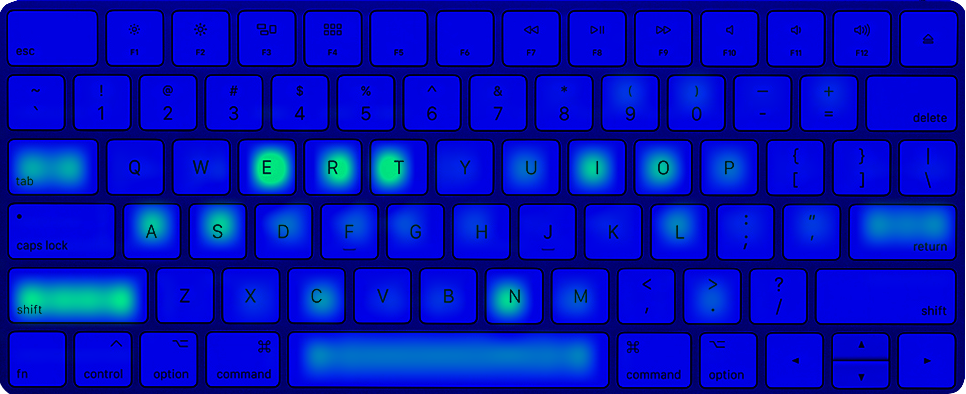
جاوا
ترتیب کاراکتر های پر تکرار : etiranos
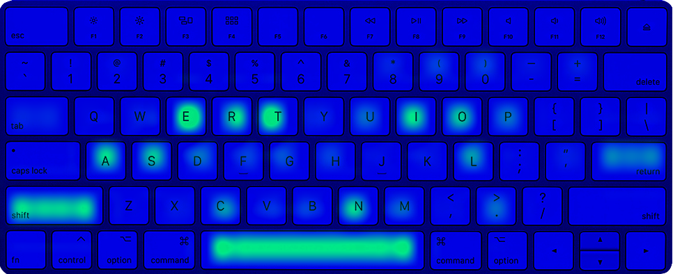
پی اچ پی
ترتیب کاراکتر های پر تکرار : etarisonl
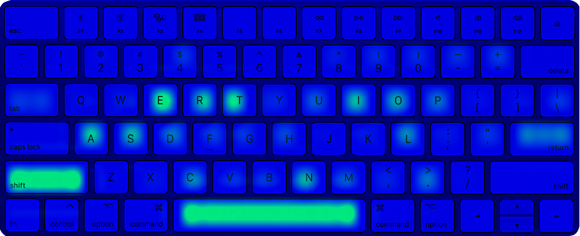
روبی
ترتیب کاراکتر های پر تکرار : etrsanio
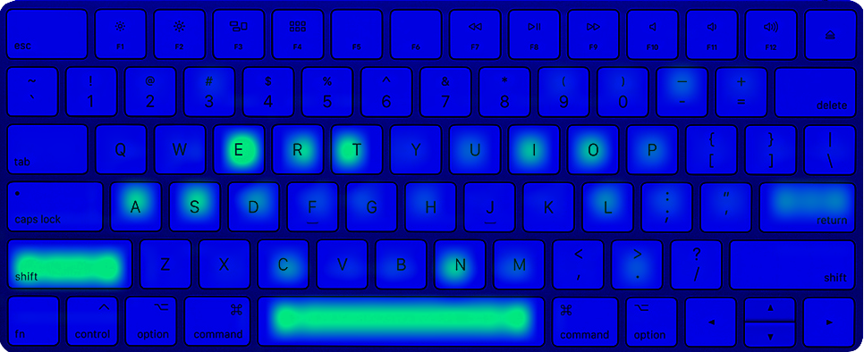
راست
ترتیب کاراکتر های پر تکرار : etrsanio
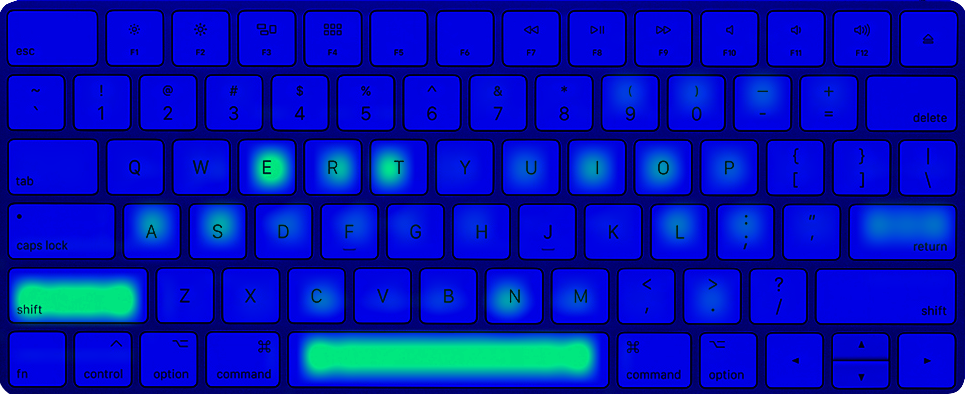
nb.neighbours()
| title | date | |
|---|---|---|
| prev | سریال ساعت برنارد | ۱۴۰۲/۰۷ |
| next | گشت و گذاری در USSDها | ۱۴۰۲/۰۸ |